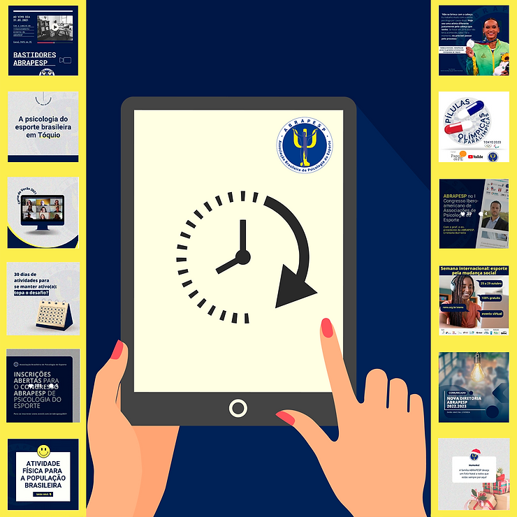

2021 termina, e apesar de todos os obstáculos provocados pela pandemia, foi um ano com muitas realizações para ABRAPESP, diretoria e associados. Aproveitando este momento, reunimos aqui, uma amostra do que mobilizou a associação.

Janeiro
O ano começou com a campanha contra o sedentarismo publicada nas redes sociais, valorizando a inclusão da atividade física de forma simples e prazeirosa em todas as fases da vida.
Fevereiro e março
A ABRAPESP lançou a 1ª Temporada de Cursos de Verão, realizados on-line. Ministrados por professores brasileiros e portugueses. Foram oito temas:
- Como pensar jogos em tempos pandêmicos?
- Influência parental em atletas na infância e na adolescência: como a psicologia pode atuar junto às famílias e comissões técnicas
- Carreira esportiva: gestão, planejamento e transição
- Alta performance e saúde mental: atuação no período de pandemia; Aspectos quantitativos e mensuração na psicologia do esporte
- Psicologia do esporte no meio de campo: as particularidades da atuação no futebol no Brasil e em Portugal
- Compreendendo o movimento: fenomenologia, neurociências e cognição
- Políticas públicas e inatividade física: aspectos relacionados à adesão e aderência às atividades ministrados por professores brasileiros e portugueses. E que gerou várias entrevistas para o nosso canal de notícias.
Abril
O livro Psicologia do Esporte e Surfe, organizado pelo professor Léo Barbosa Nepomuceno, foi lançado em uma live com a participação de profissionais da área.
Maio
Foi ao ar a primeira edição do programa mensal Bastidores da ABRAPESP, no canal Papo de PE, no YouTube.
Junho
Destaque para lançamento do GUIA DE ATIVIDADE FÍSICA para a população brasileira. Sua importância para a área é indiscutível.
Julho e agosto
Os Jogos em Tóquio mobilizaram a Associação. Membros da diretoria foram entrevistados e a ABRAPESP lançou o Pílulas Olímpicas e Paraolímpicas, programa diário com 33 edições veiculados pelo Canal Papo de PE, no Youtube
Setembro
Mal terminou os Jogos Paralímpicos de Tóquio 2020, e os preparativos para VIII Congresso em novembro acelerou e mobilizou a atenção de todos. Afinal, era o primeiro desafio de um evento tão grande transmitido via web.
Outubro
ABRAPESP participa da Semana Internacional: Esporte pela mudança social (25 a 29 de outubro) e do Congresso Iberoamericano de Associações de Psicologia do Esporte (15 e 17 de outubro).
Novembro
E chegou o momento! De 19 a 21 de novembro, a comunidade reunida para VIII Congresso da ABRAPESP. Segundo Erika Hofling Epiphanio, coordenadora do evento, a propostas dos congressos da entidade é o debate de “temas emergentes da Psicologia do Esporte e do Exercício Físico, com foco na prática e na produção de conhecimento na área de ciências do esporte, nas mais diversas áreas de atuação da Psicologia do Esporte”. A temática de 2021 foi Ciência, movimento e esporte: cuidados éticos e responsabilidade profissional.
Os grandes desafios na prática da psicologia do esporte em tempos de pandemia, foram amplamente discutidos. Diversas atividades, levaram os participantes a um movimento reflexivo, facilitador na formação de estudantes e profissionais mais qualificados para o cuidado, no contexto da prática, bem como na produção de conhecimento.
Nesta edição de 2021, a ABRAPESP contou com o apoio do colegiado de Psicologia da Universidade Federal do Vale do São Francisco e de sua pró-reitoria de extensão.
Também durante o congresso, os associados realizaram a Assembléia que elegeu na diretoria e conselho fiscal para o biênio 2022/2023. São eles:
Presidente – Rodrigo de Vasconcellos Pieri
Vice-presidente – Thabata Castelo Branco Telles
1ª Secretária – Roseana Pacheco Reis Batista
2° Secretário – Neilton de Sousa Ferreira Júnior
1ª Tesoureira – Julia Frias Amato
2° Tesoureiro – Ricardo Angelo de Andrade Souza
1ª Conselheira – Isadora Christina Oliveira e Silva
2º Conselheiro – Tarcísio Rocha Ribeiro, Brasileiro
3º Conselheiro – Paulo Augusto Costa Chereguini
Dezembro
É hora de comemorar e torcer para que 2022 seja o cenário de recuperação e de alegria.
Para todos, os nossos votos de sucesso e paz!
E quem sabe …. não rola um choppinho!